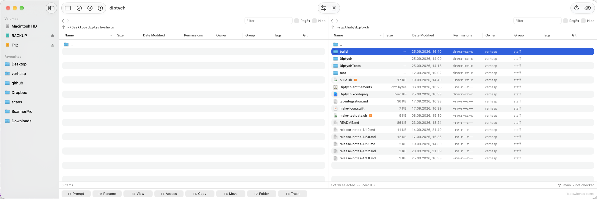
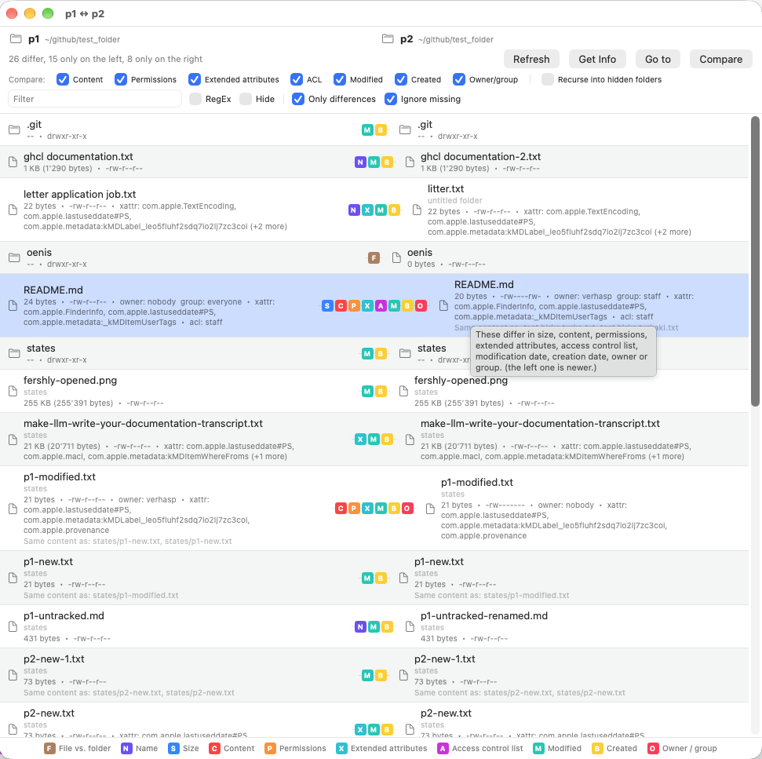
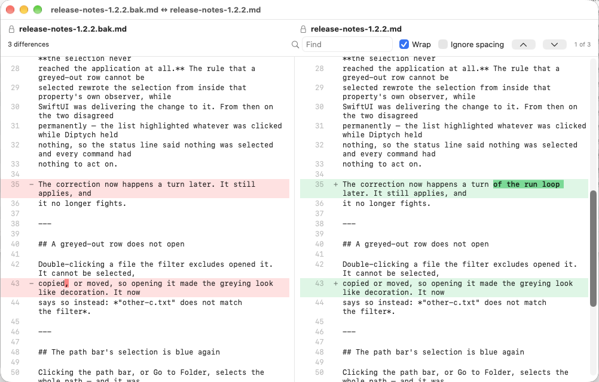
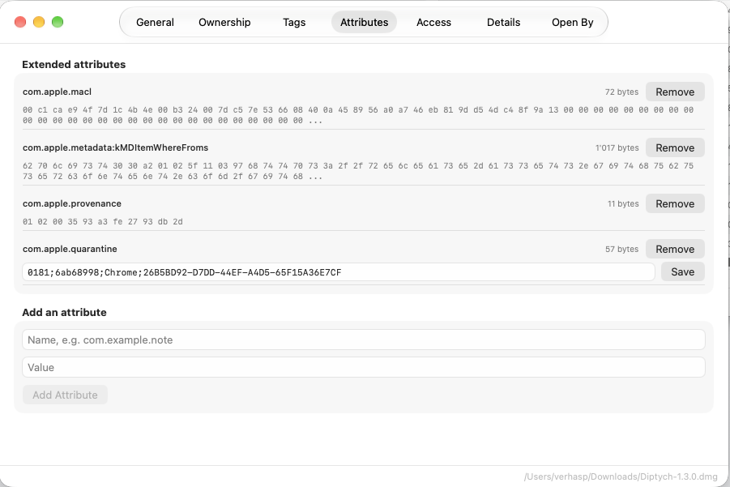

Diptych is a free, open-source file manager for macOS — two panes, a keyboard that does the work, and a genuinely useful way to compare two files, two folders, or two whole trees of them.
Free and open source · macOS 15 or later · Notarized by Apple · No telemetry, no account

Everyday driving
Built for people who move, rename, and inspect files all day, and would rather not reach for the mouse to do it.
Tab switches panes, F5/F6 copy or move to the other side, and every command lives in the Files menu too, with a shortcut, for the days F-keys are busy dimming your screen.
Reverses copies, moves, renames, permission and owner changes — across the whole session, fifty steps deep — and asks first when undoing would put something in the Trash.
One regular expression over a whole folder, with every new name shown before anything happens. Nothing is renamed until all of it can be — no half-finished batch left to sort out by hand.
Runs the git already on your Mac — nothing bundled,
nothing linked — and colours names by what sending your work would
actually do. Off until you switch it on.
A small, honest text editor that never “corrects” a quote or a dash, and a hex editor for the files that aren’t text at all — both built in, no other app needed.
Permissions, ACL, extended attributes, tags, what a file says about itself — EXIF, GPS, PDF metadata — and what else has it open, all in one window.
New in 1.3
Two text files get a real line-by-line diff. Two of anything else get an honest byte-by-byte answer. And two whole folders get a window of their own — every file paired up, colour-coded, with a legend so nobody has to memorise the letters.

In practice
A real line-by-line diff, and the Info window's Attributes tab.


Why another file manager
No Electron, no account, no upsell, and nothing that leaves your Mac unless you explicitly ask it to.
01
Not a wrapped web page. It starts instantly, uses the memory a Mac app should, and looks like it belongs on your desktop, because it was actually built for it.
02
Diptych makes no network request you didn’t ask for — not even version tracking, which stays off until you switch it on in Settings. Nothing is collected, nothing is phoned home.
03
Not a trial, not a “free tier”. The whole thing, including the test suite, is on GitHub for anyone to read, build, or send a pull request to.
04
Every release is signed with a Developer ID and notarized by Apple, so it opens the way any other Mac app does — no right-click-to-bypass required.
Get Diptych
Download the disk image, drag Diptych into Applications, done.